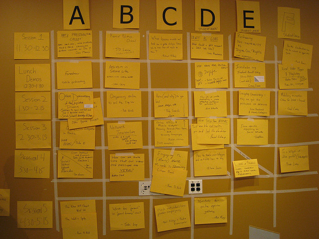
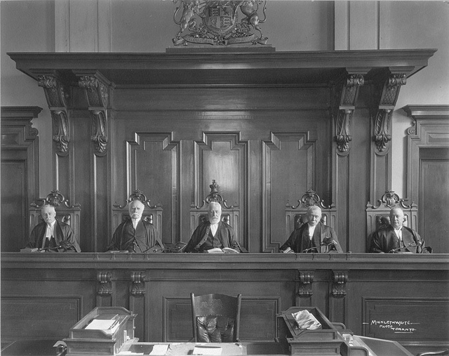
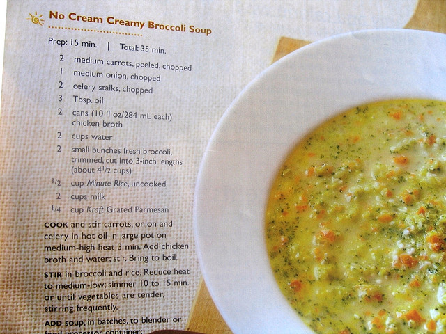
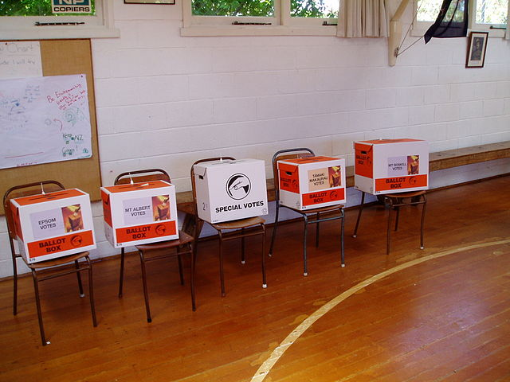

Always Take a Horse You Can Drive with One Hand
Reference: Always take a horse you can drive with one hand, 1901, United Kingdom, by Fine-Art Photographers' Publishing Co, B Singley. Te Papa (O.004074).
Copyright: No known copyright.
What Makes for a Successful Hackday?
BY TIM MCNAMARA
This post is a compilation of reflections I've had participating in a number of hack days and similar events over the last year.
My experience of these types events has been fostered over a number of years tinkering with and helping out with open source communities. In particular, I have fond memories helping out as a volunteer tester and developer with the One Laptop Per Child programme, and its subsequent software offshoot Sugar Labs.
To me, the terms unconference and hackday imply informality, mutual respect, community development and shared values. Throw a little bit of frugality in there too.
 Reference: "Unconference Schedule" by Jill. Copyright: Creative Commons Attribution Non-Commercial licence.
Tips for Everybody
Know your goals. If you are planning on putting on an event, take the time to think about who you are trying to bring together and why. A hackfest is going to bring technical folk. Talk to technical folk about the kinds of things that will be handy, useful and attractive at the event.
Talk to people. There are a number of people within New Zealand. One of the best agencies at this is the National Library of New Zealand. The culture and heritage sector's National Digital Forum and its unconference segment are world-class.
Invite media - as well as unconventional media - to get involved. Many teams would love to have their work profiled. But don’t talk to project teams for too long. Geeks need flow.
Use social media tactfully. You will get better engagement from technical communities by investing in well-written blogs post than tweets. A small number of people will tweet your event heavily anyway.
Break out space. Have a few quiet meeting spaces available to be booked in fifteen minute increments. That will provide an outlet to people who are pretty chatty while balancing the need for quiet.
 Reference: HackAKL by Tim McNamara. Copyright: Creative Commons Attribution licence.
Reference: HackAKL by Tim McNamara. Copyright: Creative Commons Attribution licence.
HackAKL
HackAKL, which took place on 24-25 May and positioned itself as 'Auckland's first civic hacking event', was well run, well catered, well financed and well publicised. It was also one of the most disappointing events I've been involved with. The focus on competition and the lavish spending really began to upset me by the second day.
I loved the free coffee and scoffed my way through plenty of free food, but I kept thinking of the extra bus or two that could have been paid for by forgoing the consultant and marketing fees that would have gone into the event to make it happen.
The counter-argument to my position is likely to run something like, “It was a key event, it needed to be managed professionally”. HackAKL became the centrepiece of a new technology roll-out that included a brand-new API. Hundreds of people signed up to participate. And the stakes were high. And that is why I think that it might have been more sensible for the council to have run multiple small events, rather than one big one.
The technology roll-out did not run smoothly. The new API did not get released on time. The dummy data provided was inconsistent with the documentation. A number of good ideas could not get off the ground.
HackAKL included several invited speakers - including international keynotes via video conference - who were ignored by almost all of the delegates. This made me think that there was too much pushed into it.
One of the things that went relatively well though was the creation of stories and teams beforehand in the wiki. However, as many of the teams were participating as part of corporate groups, there wasn’t a large degree of information-sharing between groups before hand (at least from my limited vantage point).
 Reference: 'Auckland from the Sky Tower' by Antonio Colosimo. Copyright: Creative Commons Attribution Non Commercial No Derivatives licence
Reference: 'Auckland from the Sky Tower' by Antonio Colosimo. Copyright: Creative Commons Attribution Non Commercial No Derivatives licence
Connecting people could have been a much stronger aim for the event. There are a few examples where facilitating network building could have been improved:
- The mailing list was not approachable. I subscribed early and a person’s name never appeared in any of the emails. The event organisers were intentionally being anonymous.
- If a council or government department is running an open data event; they should include members of the local open data community. New Zealand has an active group of public servants, hackers and industry members already - but that group didn’t receive official notification of the event.
- The competition element really killed cooperation and communication between teams during the event
Overall, I wonder if a smaller event - or perhaps a series of much smaller events - would have felt more Kiwi. As the weekend progressed, I kept thinking of the massive posters, gorgeous website and thinking 'this spend isn't doing much for the people of Mangere who just want a cheaper bus fare'.
Mozilla Science Lab Global Sprint
Last month, one of the Mozilla Foundation’s newest initiatives, the Science Lab, held its first global sprint. The sprint involved two working days of activity in about 30 sites worldwide. Cities were hooked together via video conference. Project leaders handed projects over between cities. As you slept, people kept extending the work that you began.
The budget for this event was tiny. Venues were donated. Marketing material was produced on free and open source software.
In New Zealand, space was donated by two New Zealand companies - Catalyst IT in Auckland, and Dragonfly Data Science in Wellington. My time (which I used to help organise the Auckland site) was donated to the cause by my employer, the New Zealand eScience Infrastructure.
Although the scale was similar to HackAKL, several hundred participants over two days, participating in the sprint felt much more intimate and welcoming. At HackAKL, every team felt very isolated. Within the sprint, teams could work independently but they could also share.
Digital collaboration tools were extremely beneficial. Both video conferencing and IRC played vital and complementary roles.
Every time I joined the video conference, I was warmly welcomed by Alison Stringer in Wellington, Damien Irving in Melbourne and Kaitlin Thaney in New York. We were a small team in Auckland, but felt very much invited to participate in the worldwide project.
 Reference: Mozilla Science Lab Global Sprint by Tim McNamara. Copyright: Creative Commons Attribution licence.
Reference: Mozilla Science Lab Global Sprint by Tim McNamara. Copyright: Creative Commons Attribution licence.
ThatCAMP
Coming back to home, the digital humanities community hold a lovely event annually called THATcamp. THATcamp - The Humanities And Technology camp - is where humanities students and scholars come together to explore how tech can assist them in their practice.
Digital humanists use computational tools such as natural language processing to conduct (meta)analyses of corpora. (Excuse the jargon!) These days, humanities scholars use computers to read lots of things and try to detect patterns that are impossible for humans to detect by themselves.
For THATcamp, there is no large pool of public funding for the event. There are a no large banners. Instead, there might be a website administered by someone in their spare time, a mailing list and a passion for collaboration. During the day-long event, people pick the schedule that they are interested in. And they talk. And they learn. And they might build.
Outcomes could be new partnerships, an understanding of issues faced by other projects, strengthening of relationships and building mutual respect with players such as a university’s IT support staff.
Wrapping Up
One of the things I've noticed is that there has been a strong tend towards corporatisation of the ‘unconference’. It’s cool to ‘hack’.
There once were unconferences, now there are hackday startups. Code for America is being spun out around the globe and I feel that Auckland suffered because of the insistence to follow a cookie cutter format. I understand the motivations - a Chief Executive is far more likely to want to sign off on an event that has a defined structure and is well-rehearsed.
However, building a competition drives teams away from each other and doesn’t enable two other key goals - creative exploration and collaboration.
Tim McNamara connects researchers with supercomputers at the New Zealand e-Science Infrastructure. You can follow him on Twitter at @timclicks
Opening New Zealand's WW1 Photography
BY MATT MCGREGOR
The Launch of WW100
Earlier this week, New Zealand officially commemorated the outbreak of World War One with, fittingly enough, both a 100-gun salute and a field of 100 white crosses on the Parliamentary lawn. The centenary is, rightfully, a big deal, and will be for the next four years. As the Ministry for Culture and Heritage's lovely WW100 site points out, the events of 1914-1918 “touched nearly every New Zealand family, every community, school, workplace and club or group” in the country.
As you might expect, much of the New Zealand GLAM sector – that's Galleries, Libraries, Archives and Museums – has been busily working on ways to mark the centenary, both for its own sake, but also to draw attention to the depth and quality of our local heritage collections. The hub for these efforts is the aforementioned WW100 site, which provides a range of resources, including a nice new search filter for WW1 materials. The WW100 folks will also be organising events, activities and projects all over the country for the next four years.
 Moses, the donkey mascot of the New Zealand Army Service Company. (Royal New Zealand Returned and Services' Association: New Zealand official negatives, World War 1914-1918. Ref: 1/2-013143-G. Alexander Turnbull Library, Wellington, New Zealand. No known copyright restrictions.)
Moses, the donkey mascot of the New Zealand Army Service Company. (Royal New Zealand Returned and Services' Association: New Zealand official negatives, World War 1914-1918. Ref: 1/2-013143-G. Alexander Turnbull Library, Wellington, New Zealand. No known copyright restrictions.)
Opening the 'H' Series
Part of the promise of the centenary is, of course, to help teach New Zealanders about the events that -- as many speeches and essays over the next four years will undoubtedly point out -- shaped them as a nation. To put this another way, the centenary promises to help remind New Zealanders that this is their history: regardless of whether one had family members in the war -- or even had family members in New Zealand -- the war shaped the kind of place that New Zealand became.
And if the events are part of New Zealand's common heritage, then so too are many of the works from that era. Recognising this, some of the largest organisations in the local GLAM sector have been working to ensure that the most significant heritage items from the war are made openly available to everyone, free of all technical, price and legal restrictions.
A particularly interesting example of this is the efforts of the Alexander Turnbull Library – working in tandem with organisations across the culture and heritage sector – to release the 'H' series of WW1 photographs.
The H series are photographs taken by Henry Armytage Sanders, and they are, as Melanie Lovell-Smith points out in a detailed background piece, “the most comprehensive visual record of New Zealanders on the Western front from 1917 to 1918.” As Lovell-Smith points out, before 1917, New Zealand didn't have an official photographer – due to the expense -- which means that the only photographs before that date were those taken by the New Zealand troops themselves.
The piece goes into much more fascinating detail about both Sanders and the H Series itself, including the circuitous route of the negatives – via the RSA – to the Alexander Turnbull Library.
The latest chapter in this long archival story is that the ATL has released digital reproductions of these photographs, in high resolution, with clear 'no known copyright' statements. This means that anyone, anywhere, can view, share, download and reuse the official record of New Zealand in World War One, without asking permission or paying a fee.
This follows the passage of the National Library of New Zealand's Use and Reuse policy (mentioned by Richard earlier in the week), principle five of which asserts that “Where no copyright restriction applies, NLNZ will seek to provide the items for use and reuse with a statement of ‘no known copyright restrictions’, after careful consideration of cultural and ethical issues relating to the items.”
You can find the photographs through the WW100 website, and download them free of charge (and copyright restrictions) from the National Library’s website.
 Massed troops at a New Zealand Division thanksgiving service, World War I. Royal New Zealand Returned and Services' Association :New Zealand official negatives, World War 1914-1918. Ref: 1/2-013806-G. Alexander Turnbull Library, Wellington, New Zealand. http://natlib.govt.nz/records/22684353
Massed troops at a New Zealand Division thanksgiving service, World War I. Royal New Zealand Returned and Services' Association :New Zealand official negatives, World War 1914-1918. Ref: 1/2-013806-G. Alexander Turnbull Library, Wellington, New Zealand. http://natlib.govt.nz/records/22684353
Opening more NZ GLAMs
While the release of the H Series is very exciting, it is just the latest in a run of Open GLAM developments. Beyond the publication of the National Library's open policy, Te Papa has also released over 30,000 open images under high resolution. 14,000 of these are made available under a Creative Commons BY-NC-ND licence; 17,000 have been released without any copyright restrictions whatsoever. This release by Te Papa has been several years in the making, as our case study, written in 2012, makes clear.
These content releases and open policies will surely be the first of many. There are hundreds of heritage institutions in New Zealand, with many millions of high quality works. As these works are digitised -- as they have been for the last fifteen or so years -- it's important that they are released as free of price, technical and legal restrictions as possible, so that as many New Zealanders (and non-New Zealanders) as possible can access and engage with works from their own heritage.
As was noted in some of the preliminary discussions behind the release of the H Series, New Zealand's culture and heritage sector does not have clear, standardised rights statements, and sometimes imposes additional price, legal or technical restrictions on the reuse of heritage works. Heritage institutions will need to adopt clear policies and processes to be, as Thomasin Sleigh, Community Manager of DigitalNZ and the kiwi representative on the Open GLAM Working Group, puts it, "clear, consistent, and open with our cultural collections."
Over the next few month, and leading up to the National Digital Forum in November, we at Creative Commons Aotearoa NZ will be doing our best to help out, mostly by producing standard resources for an Open GLAM toolkit. There are, happily, a heap of support for these policies from the sector itself.
In advance of that, though -- and to give you a sense of what is happening in New Zealand -- you might want to check out this detailed case study of the Rijksmuseum, one of the world's leading open heritage institutions. While you're at it, you can also check out our (smaller) case study of Upper Hutt City Library, to show you what's already being done.
Matt McGregor is the Public Lead for Creative Commons Aotearoa New Zealand.
Who puts the 'fair' in fair dealing?
BY RICHARD WHITE
1. "A Fair Minded and Honest Person."
Ever wondered if that photo you got from Google images for a slideshow was a breach of copyright? Or the video you downloaded off the One News web site and emailed to your parents? There’s a good chance it was, unless you can argue that your use was fair dealing. While the US concept of fair use is probably the more widely known term, in NZ we have a similar thing known as fair dealing.
You’ve no doubt been greedily consuming the tasty morsels offered up on NZ Commons already and, in doing so, you may well have seen fair dealing in action in Thomas Huthwaite’s 'When is an artistic work not original?' He explicitly says -- and trust a lawyer to do this -- that his copying of several images is allowed under the NZ Copyright Act as fair dealing for the purposes of criticism and review. He’s bang on: without it he’d be breaching copyright in a piece about copyright breaches.
Essentially, fair dealing exists to balance your rights as a consumer of cultural works against the limited monopoly granted by law to the creators or publishers of those works. Copyright gives rights holders the exclusive right to copy, share, adapt or perform their work; fair dealing is one of the exceptions in the Act that allows you to use those works in certain ways. Whether you’re writing a high school essay, putting a book review on your blog or doing the literature review for your PhD, fair dealing is what allows you to copy parts of others’ works without gaining the permission of the rights holder.
 Reference: "Judges - First Appellate Division - May 1923" by Law Society of Upper Canada. Copyright: No known copyright
In the digital age probably every one of us is copying someone else’s work every day without seeking permission, but there aren’t that many lawsuits around accusing people of breaching copyright. So who decides what is fair? Well, the Act provides some guidance (see below) but it’s case law that guides us in interpreting the Act.
The only problem is there is almost no case law involving fair dealing in NZ. In a 2002 case in Australia, a judge made this remark: "Fair dealing involves questions of degree and impression; it is to be judged by the criterion of a fair minded and honest person, and is an abstract concept."
Similar comments have been made elsewhere. Now, you might be on the verge of spotting a difficulty here. In a world that has both John Banks and Winston Peters in it, working out what a fair minded and honest person thinks is probably going to take some time.
2. The Fair Dealing Exceptions
If your purpose is research and private study you can make a single copy from a work, as long as the copying is fair. Paraphrasing the fancy language of the Act, what is fair depends on things like:
- the reason you were copying the work;
- the nature of the work itself;
- whether you could have bought it;
- whether the copying would affect the market for it; and
- the amount copied in relation to the whole (there’s no magic 10% or allowable number of pages).
So, copying a chapter or section of a book would be far more fair than a bigger proportion, especially where you could just purchase your own copy. Copying would be more fair if you were using something no longer (or never) available commercially with a view producing a work of your own that placed the copied work in a much broader context. The key point here is that your copying must be for a purpose that informs your own research and private study; you can’t publish any copies you make under this provision, unless...
You can claim fair dealing with a work for the purposes of criticism, review and news reporting, provided there is sufficient acknowledgement, i.e. identifying the author/source and date of the work. Unlike research/private study, you can make multiple copies. The 'fairness' or otherwise of any copying for criticism or review would be determined according to similar factors as those listed under research or private study above.
Thomas Huthwaite’s piece is a good example: he uses low resolution copies of the works he is reviewing and provides a commentary on the legal implications of derivative works that borrow heavily from originals. Another good example is this post on the Auckland Libraries’ Heritage & Research blog: while it uses images from the covers of School Journals that are works by famous NZ artists, where the copyright will either be held by the artist or his or her estate or by the Ministry of Education (depending on whatever agreement was made at the time), the purpose is clearly to illustrate how a sense of nationhood is expressed through the works; the images are low resolution and so wouldn’t be suitable for commercial reproduction; and there is no commercial gain for the library or loss for the artist.
It’s worth noting that the fair dealing defence here only allows their copying for their purpose; it doesn’t allow anyone else to make further copies from their copies unless the next person can also claim fair dealing with the works. It’s still possible for a rights holder to challenge any use of his or her work of course as unfair. It’s all in the eye of the beholder -- and if the beholders can’t agree, then it’s down to the courts.
This provision also covers reporting of news and current events, though this specifically excludes photographs.
3. The Limits of Fair Dealing
What doesn’t fair dealing cover? NZ law does not include a fair dealing exception for educational use because education has its own section in the Act. So you can’t argue that a particular use in the classroom is fair dealing, unless you’re critiquing/reviewing the work in some way of course; but to make, say, multiple copies of a chapter of a book you need to use one of the educational provisions that cover multiple copying, obtain a licence or get permission from the rights holder. Nor do we have a provision for parody and satire. You’d have to argue that you were critiquing the work if someone challenged your use as a breach of copyright.
From the above we can see that NZ copyright law spells out very specifically the purposes for which you could argue that your use of something is fair dealing with a copyright work. This is the same in the UK, Canada, Australia and many other countries. And this inflexibility is what has led many of these countries to debate whether adopting a more flexible US-style fair use framework would be better to encourage innovation and economic growth -- and just to allow what most of us would consider everyday acts in the digital age. But that’s a topic for another post...
To go back to the question in the title: who decides what is fair? In a very real sense it is you and me. Our approach, certainly in the educational sector, has been very conservative. Consider the official advice the Library & Information Association of NZ gives to graduate research students: brief quotes are OK but be wary of any graph, table, diagram, excerpts from video, sound recordings, etc. “Students should always obtain prior permission from copyright owners where there is any doubt regarding the legality of including in-copyright materials in theses.”
It’s time to challenge this risk-averse approach. Our National Library is taking a lead, with its new collection and reuse policy. And we can do this as individuals and institutions too. Take care and respect copyright but, as should be plain from the examples in this piece, you can take the role of the fair-minded and honest person and make your own judgement based on the purpose and nature of your use as to whether what you’re doing is fair.
Richard White is the Copyright Officer at the University of Otago. He blogs at Open Otago. He is also a musician who releases his work under CC BY-SA. You can listen to Richard’s music at his Soundcloud page and follow him on Twitter @rkawhite
World War 1 NZ Machine Gunners

Reference: World War 1 New Zealand machine gunners using a captured German position, Puisiuex, France. Royal New Zealand Returned and Services' Association :New Zealand official negatives, World War 1914-1918. Ref: 1/2-013511-G. Alexander Turnbull Library, Wellington, New Zealand. http://natlib.govt.nz/records/22304585
Copyright: No known copyright
When is Open Access not Open Access?
BY ANTON ANGELO
When it's ‘Openly Accessible’, that’s when. The goal of Open Access is to make material legitimately freely available to the end user. Note the careful caveats: “freely”, implying no cost as well as easily findable; and “legitimately”, meaning legally unencumbered.
A lot of stuff out there on the net is Openly Accessible: you can find it, download it, read it or play it, but not much else. A good example of this is a lot of material on University Institutional Repositories. You may not think you know what they are, but you use them all the time if you do any research. When you search Google Scholar and there is a link to a PDF or txt document that isn’t to the original journal, that’s probably in some kind of repository. If the link is held at a university, it will probably be an institutional repository.
Reference: Cropped "Lower Level Three Stacks" by Archives New Zealand. Copyright: CC-BY
Institutional Repositories (IRs) hold a lot of stuff, but the best stuff, the stuff no-one else has, are postgraduate theses. At Canterbury's IR we have pretty much all the doctoral theses online, and we are working through Masters and other degree Research Reports.
There is gold in there. The oldest is a 1914 work on the outrageous land prices in Canterbury (plus ça change). I know that some have been downloaded many thousands of times, and I have had emails of appreciation for making work available from as far away as a Nepalese ostrich farmer.
There are about 5,500 theses, and I put about a dozen up every week - both new theses and newly scanned older ones. As well as being a great research topic in themselves, the data in these works is invaluable. They contain geological maps, bibliographies, raw data sets -- every conceivable kind of information.
So, what can you do with them once you have read them? Almost nothing. You can quote bits of them, as long as you attribute the author. Can you print out one of the maps and put it on your wall? No. Can you re-use the data tables? Maybe, but you would best to ask the author of the thesis, if you can find them.
The reason for this is that all the theses have been uploaded with an “All Rights Reserved” licence, which, at the time the repository was founded, was not a bad choice. I’m working to get at least a choice of licences available for new theses, and I have a lot of support from my organisation to do so. But the people who really need to use the licences are the owners of the work -- the students writing their theses.
It's not as easy as it sounds - in a lot, if not a majority of cases, this is the first work a student has made publicly available. Previously, when students wrote an assignment, it went to an assessor, and that was it. Now, they are being asked to put their name to something that is going to be available all over the world, and they are quite justifiably shy.
We offer the option to hold back making the thesis public (an ‘embargo’) for a variety of legitimate reasons. Recently the rates of embargoes has shot up. (Is that coincidental with the issues of privacy being made more accessible through platforms like Facebook? Maybe. There is probably a thesis topic in that, just in itself).
Theses are Openly Accessible, but not, in our case, or the case of the majority of universities around the world, “Open Access”. We can access the work, but we can’t do anything with it, other than quote it. It may seem like splitting legal hairs, but it will become an important distinction if we decide to start mining this fantastic resource for information.
Often this work is the best stuff thesis writers will ever do, and it deserves respect. The best way we can respect it is to make it as available for reuse as possible, and get all the value we can out it.
Anton Angelo is the Research Data Coordinator at the University of Canterbury
A New Digital Divide?
BY PAUL CALLISTER
An editorial entitled ‘Improving outcomes for New Zealand men with prostate cancer’ features in the 14 February 2014 edition of the New Zealand Medical Journal. This will be a topic of interest to many men. But due to this journal’s publishing policies, the public cannot read the article until after six months.
In another area of research important to New Zealand, in 2013 an article ‘Evaluating Ecological Restoration Success: A Review of the Literature’ was published in the journal Restoration Ecology. But unless one is a member of the United States Society for Ecological Restoration, or has a library account that allows access to such journals, ‘citizen scientists’ cannot read it. New Zealand has large numbers of such ‘citizen scientists’ who freely give their time to run eco-restoration groups. It is vital for them to know whether their work is making a difference.
On many subjects, members of the public will want to get behind the headlines and the press releases to read the original, often taxpayer funded, research. But, unless one works for a university, a research institution or perhaps a government department, instant low cost access to such articles can be difficult.
Buying a particular article may not be a financial barrier for everyone. Sometimes the cost per article is relatively low. But until payment is made, it is difficult to determine whether the paper is useful. Most researchers have the experience of trolling many articles before finding useful ones.
Alternatively some paper copies of journals are held in New Zealand research libraries. But generally libraries are switching to electronic access and no longer hold printed versions. Or like the New Zealand Medical Journal, one may have to wait for a set period before an article becomes freely available.
So why do we have an emerging digital divide in society where one group has easy and instant access to new research often funded out of the public purse yet others face significant costs, delays or barriers to accessing knowledge?
Societies are increasingly complex. People are becoming better educated, with a dramatic rise in tertiary enrolments of young people and an increasing number of well educated people moving into retirement. Due to demographic changes the retired or semi-retired ageing population is also swelling in size. While there has been a recent emphasis on their participation in paid work, many older people also want to contribute to society in a voluntary capacity.
To participate in democratic processes, such as presenting submissions to select committees or local council planning hearings, it is increasingly necessary to undertake research on particular topics. For example, with predicted sea level rise, is it sensible to build or maintain sea walls? What does the international research say about ‘fracking’? Should water be fluoridated? To make the best possible decisions all parties should have access to the latest research.
In the past, one might have expected society’s ‘critics and consciences’ to be located in universities. Now many of these voices, including some who have retired, are outside these institutions.
One solution is for researchers to publish only in ‘open access’ journals that are freely available to everyone. Alternatively, all academic journals could move towards becoming open access. In some countries, strong incentives exist for research to be made widely available. In the United States, the health funder National Institutes of Health requires scientists to submit peer-reviewed journal manuscripts that result from their funding to the open access archive PubMed Central upon acceptance for publication. Currently, this is not a requirement of New Zealand’s equivalent agency, the Health Research Council.
There is on-going debate about the costs and benefits of shifting entirely to open access journals, but it seems unlikely this shift will occur in the short to medium term. So journal access generally requires a connection to a library with a subscription.
The National Library of New Zealand subscribes to many journal and article databases. But while some search results may be viewed from outside the National Library, most of their subscriptions require the researcher to examine the item's full text in one of the library’s reading rooms. This system clearly favours Wellington and Auckland based residents over those in other parts of New Zealand.
Free online access to The Cochrane Library is provided to all New Zealanders by the Ministry of Health. This is very useful in terms of access to a range of health research but does not include access to many health related journals.
More radical solutions are required. A number of years ago, Statistics New Zealand stopped charging for much data recognising that the wider economic value of making the data free was significantly more than the revenue obtained from selling it. A national site license option may be attractive to information suppliers---i.e. one cheque per annum and no administration hassles. Clearly there is a cost in providing access to journals. Even with open access journals someone has to pay for the editing, reviewing and production. But with all the innovations occurring in publishing and electronic information sharing ways to reduce substantially the cost of journal access could surely be found.
A large community of university and government researchers already enjoys ready access to on-line resources such as journals, presumably on terms that satisfy providers’ commercial needs. Arrangements to extend such access to those in the wider community should be considered.
Paul Callister is a New Zealand economist who has conducted research on local, national, and cross-national issues for a wide range of public, private sector and voluntary organisations. This post was originally published at Callister & Associates.
Creative Commons in the Kitchen
BY MIKE RIVERSDALE
In our house, we have a shelf of cookbooks. Some have barely been opened, others are the classic “coffee table” types, but then there’s the ones we use at every opportunity. I’m sure you’re just the same.
I rely heavily on my British background and am never far from Mrs B (Mrs Beeton's Book of Household Management) when I need to know how long to roast a chicken. Having been here in New Zealand since 1996, I will also reach for every student’s cooking bible, Edmonds Cookbook.
Both these fine tomes pale into nothing when compared to my wife's recipe “book”. It is handmade, full of very old bits of paper and uses a hope and a prayer as a means of organisation.
 Reference: 'Creamy Broccoli Soup' by Bill Mckee. Copyright: CC-BY-SA
This collection of recipes (to be called “Liz’s Recipe Book”, even though it’s not strictly a book) is chock full of IP -- that is, Intellectual Property, that nebulous stuff that seems to be both the oil and the grit in today's society.
So what has Liz’s Recipe Book got to do with Creative Commons?
Everything. Liz's Recipe Book is CC-BY-NC in action.
And that’s the main idea I’d like everyone to walk in to their kitchen with - Creative Commons is NOT a new, strange, librarian-focussed, computer-nerd ridden subject. It is most certainly a subject that librarians and IT folk need to have a deep understanding of, but it also swirls around us normal people.
So what is Creative Commons in the kitchen? It’s the right to have a copy of someone's recipe under strict instructions as how you can use it. This is an explicit right given by the originator of the recipe. It doesn’t imply ability -- just because you can follow the recipe, doesn't make you a good cook (I know). And if I use the recipe but still make a mess of it, that’s my problem, not the person who wrote the recipe.
Now, my mother-in-law passes on her recipes to everyone and anyone she can (and you’ll be happy if it’s you). She wants the world to know that her broccoli soup is da bomb and that everyone should make it. Just like Jamie Oliver, surely?
Almost. But imagine going into your local library, photocopying each page of The Naked Chef and walking out. Imagine trying to do that in Whitcoulls. Imagine doing that by filming Jamie Oliver in his restaurant.
What’s the difference? Jamie Oliver uses copyright to restrict use of his recipes to specified means - buy the book, watch the TV show, come to the live show, GO TO THE RESTAURANT.
Imagine if my mother-in-law said, “Here ya go Liz, have my broccoli soup recipe, that’ll be $5 please” - yeah, right! Or, even more unlikely, “Here ya go Liz, my favourite broccoli soup recipe. Oh, every time you show it to someone can you please get them to pay $10 and I’ll take my $5 cut?”
That’s not how family recipes are passed down, is it?
Imagine a world where everything was owned and managed like a Jamie Oliver recipe. We’d never get my wife’s Curry Broccoli Soup dish, and that would be a very sad world indeed. That’s not to say that I’m advocating getting rid of the standard, paid-for cookbook. Far from it. But I certainly don’t want to have a system of copyright applied as a default just because there’s no other option.
Luckily there is something else: Creative Commons. Using Creative Commons, my mother-in-law can protect herself and her recipes. She can ensure her broccoli soup recipe is passed on without hindrance. She can let future generations know that she’d love it to be used as the basis of future broccoli soup dishes. She can also, if she see’s fit, ensure that no-one can make money off her recipe.
Or maybe you have a recipe you want to protect in different ways? If so, check out the Creative Commons licences that suit you and spread those delicious recipes* around the world for all to feast upon.
* recipes = food, software, music, art, photos …. you get the picture.
Mike Riversdale helps individuals and companies become more successful by motivating, mentoring and supporting their technical/information teams. He is on Twitter @miramarmike and is the co-host of the Access Granted podcast.
Lend Wikipedia Your Cameras!
BY STUART YEATES
We are currently in the thick of a the political campaign for the New Zealand general election, 2014 and at Wikipedia, our coverage continues apace, with articles for every electorate, every MP and every political party. What we are missing, by-and-large, is images to illustrate these articles.
 Reference: "Ballot Boxes" by Simon Lyall, via Wikimedia Commons. Copyright: Public Domain.
If you’re an aspiring photojournalist, or just happen to be in the right place at the right time, we’d love for you to take political photos and upload them to Wikimedia commons.
What kinds of photos are we after? Pretty much any documentary photos: portraits of politicians (both as people and doing distinctively political things); hustings; polling stations; election-night parties; voter enrollment campaigns; election campaigns; etc. While even a poor quality image is better than no image of a subject, what we’re really after is well-composed, well-executed images of at least two megapixels. The better the quality of the image, the more options are available to users of the image going forward.
Describing and labelling your images is important—there are more than twenty million images on Wikimedia Commons and without good descriptions and labels they’ll be unfindable. You should aim to describe who, what, when and where. Who are the people (if any) in the image? What are they doing? When are they do it? Where are they doing it? Descriptions of composition (‘landscape,’ ‘three-quarters length portrait,’ etc) can also be useful.
More generally we’re after photos to illustrate the people, places, events and abstract concepts which we have Wikipedia articles on. Fun projects: include stitched panoramas from local look-out spots; photos of public art installed locally; local marae, whakairo and tukutuku; portraits of local artists or officeholders; local historical sites (Māori pā, buildings listed by the Historic Places Trust, gravestones of notable people, etc); New Zealand native plants and animals; — the list is endless. New Zealand subject matter isn’t going to be documented by anyone else, so it’s largely up to us to do this work.
While it’s possible to upload images that other people have taken, due to the complications of getting copyright clearance, it’s better if the person who took the photos uploads the images. It’s typically easier to re-take photos than jump through the hoops of copyright clearance, unless you are dealing with thousands of photos or those of particular historical significance.
Both the English and Māori language Wikipedias have access to the same pool on images on Wikimedia commons, but the English language Wikipedia, as the larger of the two, uses many more images. Commons images can also also be used in Wikibooks, Wikiversity and other members of the WikiMedia family or reused in your own projects under appropriate licenses.
Stuart Yeates is a New Zealand Wikimedian and librarian.
When is an artistic work not ‘original’?
BY THOMAS HUTHWAITE
What do George Bush, Bob Dylan, and Shepard Fairey have in common? It sounds like the start to a bad joke, but potential copyright infringement is no laughing matter – particularly when trying to make a name for oneself as an original artist.
Here are three cautionary tales…
“Hope”
In 2008, street artist Shepard Fairey created an iconic image for Obama’s presidential election campaign. Fairey was already known for his use of repetition in street art (notably his “OBEY” poster featuring wrestler Andre the Giant), but this was taken to the next level with his blue and red image of Obama above the word “HOPE”.
The image went viral online and by October 2008, Fairey claimed to have printed the image on 300,000 physical posters, 1 million stickers, clothing and other items, not to mention the number of downloads of a free printable digital version. Fairey reportedly cited his inspiration as being a contemporary take on a well-known JFK portrait, or the image of President Lincoln on the five dollar note.
Barack Obama won the election, and Fairey became an internet sensation. But Fairey’s story became even more sensational in 2009 when he was accused of basing his image on an Associated Press photograph taken by Mannie Garcia in 2006. Associated Press sued for copyright infringement, while Fairey sought a declaration that his use of the photograph was protected by the doctrine of “fair use”.
In October 2009 and in the light of damning discovery documents, Fairey admitted that he had based his poster on the Associated Press photograph, and that he fabricated and destroyed evidence to hide that fact. With a finding of infringement likely, Fairey and Associated Press reached a confidential out of court settlement agreement in January 2011.
Fairey was later charged in a criminal suit with destruction of evidence and sentenced to 300 hours of community service and a US$25,000 fine.
Associated Press photograph and Fairey's poster

“Drawn Blank”
In late 2011, Bob Dylan exhibited the first of a series of paintings entitled “Drawn Blank”. The exhibition’s description was a “visual journal of travels in Japan, China, Vietnam, and Korea” with “first-hand depictions of people, street scenes, architecture and landscape”.
Within days, internet chatter revealed what appeared to be the true source of Dylan’s paintings. One painting, called “Opium”, was almost identical to a photo by Léon Busy (1915). Another, entitled “Trade”, is a replica of a photo by Henri Cartier-Bresson (1948). These are just two examples of several alleged copies:
Perhaps Dylan had ‘drawn a creative blank’ himself, and the exhibition title should have tipped us off. However, there have been no further repercussions for Dylan’s apparent copying, except perhaps a public loss of respect for his works.
Léon Busy photograph and Dylan's painting 'Opium.'
Henri Cartier-Bresson photograph and Dylan's painting 'Trade.'

{kind=link}
{kind=link}
{kind=link}
{kind=link}
{kind=link}
{kind=link}
{kind=link}
{kind=link}
{kind=link}
{kind=link}
“Art of Leadership”
It’s now mid-2014, and the gist of this article should signpost the irony of George Bush’s exhibition title. Instead of taking a lesson from the above case studies or leading by example, Bush also found himself the centre of controversy.
Bush gave detailed explanations of how he chose to paint each of the political figureheads shown in his exhibition. He explained having painted his father George H.W. Bush with a “gesture of compassion”, and Angela Merkel as being a “sympathetic portrait”.
But critics have now identified that many of Bush’s images are uncannily similar to the very first result of a Google images search. Here’s a visual example:
There seems to be little excuse for Bush, who once had access to all of the leaders in his exhibition, and certainly could have obtained an original photograph (or live sitting) of his own father. While being caught out must have caused some embarrassment, no further action has been taken against Bush.
Associated Press photo and Bush painting

Armin Linnartz photo and Bush painting

Take home messages
- Do not copy existing copyright works or substantial parts of those works. Google search results and online images are not always “free” images in that they might well (and often do) attract copyright protection.
- Create an original work, using inspiration where necessary. If you are drawing on some form of inspiration, carefully check and acknowledge your sources where required.
- If you want to use a copyright work outright, ask the owner for permission. Without the owner’s permission, direct copying of a work is likely to amount to copyright infringement.
- If you want to share your work, but think it’s difficult, talk to someone about using a Creative Commons license. They’re easy to understand, simple to apply, and provide clarity for all involved.
- Lastly, be honest about your inspiration. If you are using someone else’s image – even if only as ‘inspiration’ – chances are that you will be found out!
*The above images are reproduced in accordance with section 42 of the New Zealand Copyright Act 1994: Fair dealing for the purposes of criticism, review, or reporting.
Thomas Huthwaite is an Associate at Baldwins Intellectual Property, an intellectual property patent attorney firm
Except where otherwise noted, copyright content on this site is licensed under a Creative Commons Attribution 4.0 International Licence.